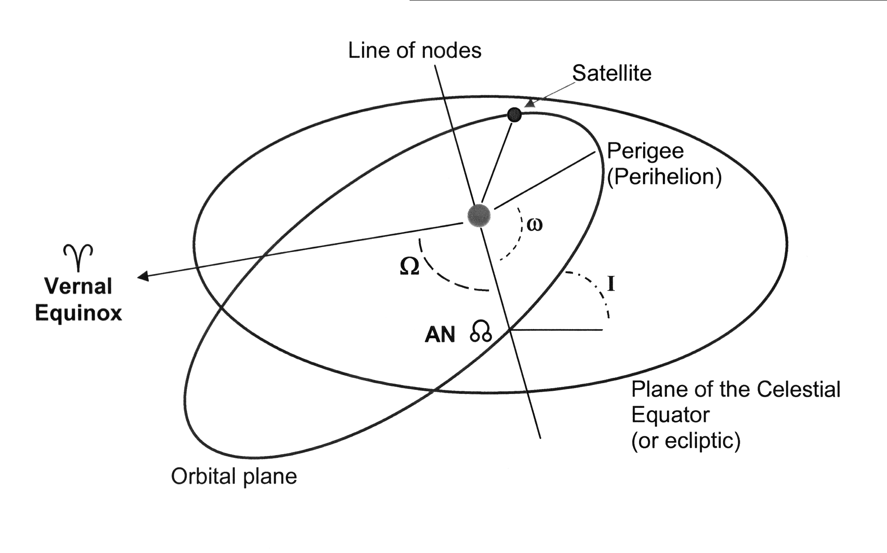
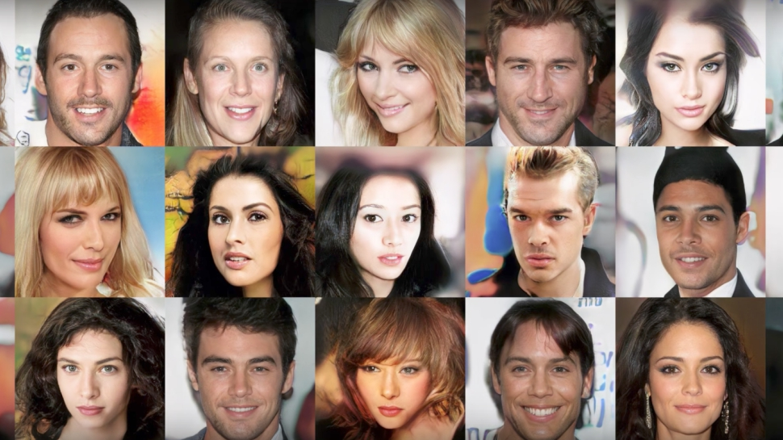
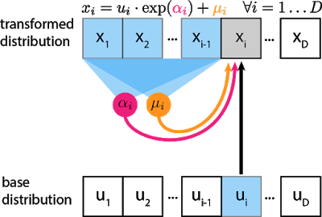
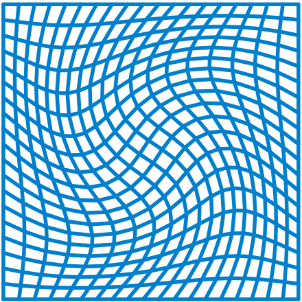
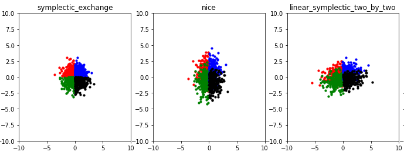
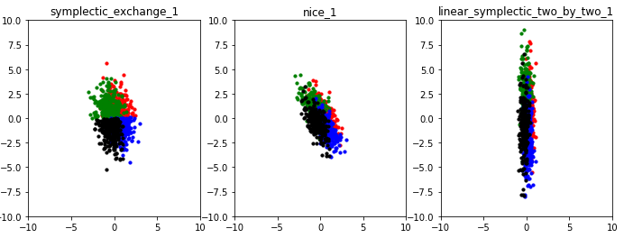
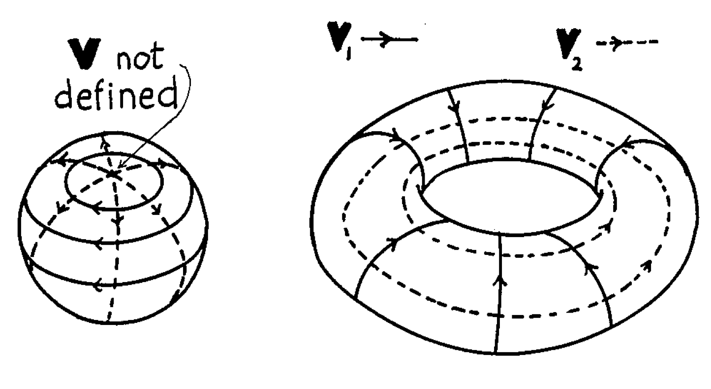
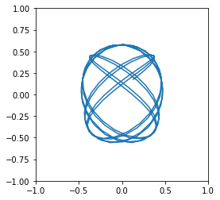
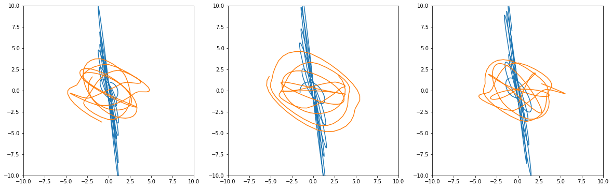
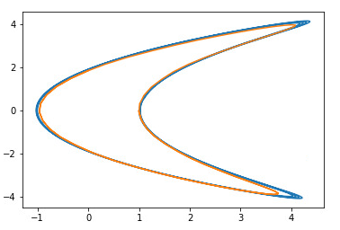

Normalizing Flows and Canonical Transformations
Normalizing Flows and Canonical Transformations
Austen Lamacraft and Roberto Bondesan
How do we choose the right variables?

Outline
Normalizing Flows
Learning Canonical Transformations
Application: Integrable Models
Normalizing Flows
Generative Models
Sample from a multivariate distribution

Default approach in physics
\[ P(\{\sigma_i\}) = Z^{-1} \exp\left(-\beta\sum_{i,j}J_{ij}\sigma_i\sigma_j\right) \]
Use MCMC to sample from distribution, calculate expectations, etc.

The Idea (Rezende & Mohamed, 2015)
- Given bijection \(\mathbf{f}:\mathbf{x}\longrightarrow\mathbf{z}\) we have \[ p_\mathbf{X}(\mathbf{x}) = p_{\mathbf{Z}}(f(\mathbf{x}))\left|\frac{\partial \mathbf{f}}{\partial \mathbf{x}}\right| \]
- Rich \(\mathbf{f}\) can yield complex \(p_\mathbf{X}\) from simple \(p_{\mathbf{Z}}\) (e.g. Gaussian)
- Parameterize \(\mathbf{f}\) with (deep) neural network
- Compose many bijectors \(\mathbf{f}_L\circ \mathbf{f}_{L-1}\cdots \circ \mathbf{f}_1\)
- Train by maximizing log-likelihood of data
Application 1: Generation
- Sample: \(\mathbf{x}=\mathbf{f}^{-1}(\mathbf{z})\) for \(\mathbf{z}\sim p_{\mathbf{Z}}\) (requires invertible \(\mathbf{f}\))
- Glow, Diederik P. Kingma, Prafulla Dhariwal, arXiv:1807.03039
Application 2: Density Estimation
- Given \(\mathbf{x}\) find \(\log p_X(\mathbf{x})\)

- Hyunsun Choi & Eric Jang, arXiv:1810.01392
The Challenge
\[ p_\mathbf{X}(\mathbf{x}) = p_{\mathbf{Z}}(f(\mathbf{x}))\left|\frac{\partial \mathbf{f}}{\partial \mathbf{x}}\right| \]
- For \(\mathbf{x},\mathbf{x}\in\mathcal{R}^D\) computation of determinant is \(O(D^3)\)
- Prohibitive for training of large models.
Two Solutions
- Choose \(\mathbf{f}_j\) to have tractable jacobian
- Continuous limit
- Let’s look at some examples of the first approach
Example 1: Real NVP (Dinh et al, 2016)
- Divide the variables \(\mathbf{x}\) into two groups \(x_{1:d}\) and \(x_{d+1:D}\)
\[ z_j = x_j e^{\alpha_j(x_{d+1:D})} + \mu_j(x_{d+1:D}), \qquad j=1,\ldots, d \] \[ z_j = x_j \qquad j=d+1,\ldots, D \] \[ \left|\frac{\partial \mathbf{f}}{\partial \mathbf{x}}\right| = \prod_{j=1}^d e^{\alpha_i(x_{d+1:D})} \]
- Parameterize scale \(e^{\alpha_j(x_{d+1:D})}\) and shift \(\mu_j(x_{d+1:D})\) by NN
- Compose many bijections
- Alternating between two sets of variables, or
- Linear orthogonal transformations (c.f. Glow)
Example 2: Autoregressive models
- Exploit chain rule of probability: \(p(\mathbf{x}) = \prod_j p(x_j|x_{1:x_{j-1}})\)
\[ x_j = z_j e^{\alpha_j(x_{1:j-1})} + \mu_j(x_{1:j-1}) \]

Canonical Transformations
Canonical Transformations
- For \((\mathbf{q}, \mathbf{p})\in\mathbb{R}^{2N}\), \(\mathbf{f}:\mathbb{R}^{2N}\longrightarrow \mathbb{R}^{2N}\) is canonical if
\[ \{q'_j,p'_k\} = \sum_{l=1}^N \left(\frac{\partial p'_k}{\partial p_l}\frac{\partial q'_j}{\partial q_l}-\frac{\partial q'_k}{\partial p_l}\frac{\partial p'_j}{\partial q_l}\right) = \delta_{jk} \] \[ \{q'_j,q'_k\} = \{p'_j,p'_k\} = 0 \]
- Preserves the form of Hamilton’s equations
\[ \dot q_j = \frac{\partial H}{\partial p_j},\qquad \dot p_j = -\frac{\partial H}{\partial q_j} \]
Example 1: \(\mathbf{f}:(q,p)\longrightarrow (q',p')\in \mathbb{R}^2\)
- For \(N=1\) only require unit jacobian determinant

\[ \frac{\partial p'}{\partial p}\frac{\partial q'}{\partial q}-\frac{\partial q'}{\partial p}\frac{\partial p'}{\partial q} = 1 \]
- e.g. linear canonical transformation (stretches, rotations, shears)
\[ \begin{pmatrix} q'\\ p' \end{pmatrix}= S\begin{pmatrix} q\\ p \end{pmatrix},\qquad S\in SL(2,\mathbf{R}) \]
Example 2: ‘Type 2’ canonical transformation
- \(N>1\) preserve area in all \((q_j,p_j)\) planes (generalizes Liouville’s theorem)
\[ \mathbf{q}'=\mathbf{q}, \qquad \mathbf{p}'=\mathbf{p}-\nabla F(\mathbf{q}) \]
- c.f. real NVP
\[ z_j = x_j e^{\alpha_j(x_{d+1:D})} + \mu_j(x_{d+1:D}), \qquad j=1,\ldots, d \]
- Differences:
- Shift is a gradient \(\mu=-\nabla F\)
- No scale (‘NICE’)
Parameterizing shift
Two options
\(F(\mathbf{q})\sim \text{NN}\) and get \(\nabla F(\mathbf{q})\) from autodifferentiation
Irrotational NICE: \(\partial_j \mu_k = \partial_k \mu_j\) if
\[ \mu(\mathbf{q}) = W_1^T\sigma(W_2 \sigma(W_1\mathbf{q})), \qquad W_2 \text{ diagonal} \]
More complicated transformations
Stack together
- Linear CT
\[ \begin{pmatrix} q'\\ p' \end{pmatrix}= S\begin{pmatrix} q\\ p \end{pmatrix},\qquad S\in SL(2,\mathbf{R}) \]
- Type 2 CT
\[ \mathbf{q}'=\mathbf{q}, \qquad \mathbf{p}'=\mathbf{p}+\mu(\mathbf{q}), \qquad \mu(\mathbf{q}) \text{ irrotational} \]
- Symplectic exchange
\[ \begin{pmatrix} q'\\ p' \end{pmatrix}= \begin{pmatrix} 0 & 1\\ -1 & 0 \end{pmatrix}\begin{pmatrix} q\\ p \end{pmatrix} \]
Visualize bijectors
 
Application: (near-) Integrable Models
Liouville-Arnold Theorem
Integrable means \(N\) conserved quantities \(I_j\) with \(\{I_j,I_k\}=0\)
Submanifold of phase space at fixed \(\left\{I_{i}\right\}\) is \(N\)-Torus \(\mathbb{T}^{N}\)

- Conjugate variables \(\phi_{i}\) satisfy \(\phi_{j}=\omega_j t+\phi_{i,0}\) with \(\omega_j=\frac{\partial H}{\partial I_{j}}\)
Loss function
- Seek a transformation to variables \(q'_\alpha\), \(p'_\alpha\) with constant radial coordinate
\[ \rho_\alpha = \sqrt{{q'_\alpha}^2 + {p'_\alpha}^2} \]
- That is
\[ q_\alpha \dot q_\alpha +\pi_\alpha \dot \pi_\alpha=q_\alpha \frac{\partial H'}{\partial \pi_\alpha}-\pi_\alpha \frac{\partial H'}{\partial q_\alpha}=0, \]
- Suggests the loss function
\[ \ell(q,\pi) = \sum_\alpha \left(q_\alpha \frac{\partial H'}{\partial \pi_\alpha}-\pi_\alpha \frac{\partial H'}{\partial q_\alpha}\right)^2 \]
Example: Neumann Hamiltonian
\[ H = \frac{1}{4}\sum_{\alpha,\beta} J_{\alpha\beta}^2 + \frac{1}{2}\sum_\alpha k_\alpha x_\alpha^2 \]
\(J_\alpha\beta = x_\alpha p_\beta - x_\beta p_\alpha\) (generalized) angular momentum
Constants of Motion
\[ I_\alpha = x_\alpha^2 + \sum_{\beta\neq \alpha} \frac{J_{\alpha\beta}^2}{k_\alpha-k_\beta} \] \[ H = \frac{1}{2}\sum_\alpha k_\alpha I_\alpha, \qquad \sum_\alpha x_\alpha^2 = \sum_\alpha I_\alpha \]
Neumann Trajectories for \(N=3\)
- Motion is confined to the sphere \(S^{N-1}\)

Learnt Representation for \(N=3\)

Toy Example: Nonlinear oscillator
\[ H(q,p) = \tfrac{1}{8}p^2 + \tfrac{1}{2}(q - \tfrac{1}{4}p^2)^2 = \tfrac{1}{2}q^2 - \tfrac{1}{4}q p^2 + \tfrac{1}{32}p^2(1+p^2)\, , \]
Base Hamiltonian is the harmonic oscillator:
\[ H_0(q,p) = \tfrac{1}{2}(q^2 + p^2)\, . \]
Learnt transformation

Fermi–Pasta–Ulam
\[ H = \sum_{i=1}^N \frac{1}{2} [p_i^2 + (q_{i} - q_{i+1})^2] + \frac{\alpha}{3} (q_{i} - q_{i+1})^3 + \frac{\beta}{4} (q_{i} - q_{i+1})^4 \]

Transform Normal Modes
- \(N=5\) sites, 4 nonzero modes

- It’s not making things worse!
Outlook
Prethermalization / Generalized Gibbs Ensemble
Continuous Canonical Transformations
Convolutional bijectors, identical particles. etc.